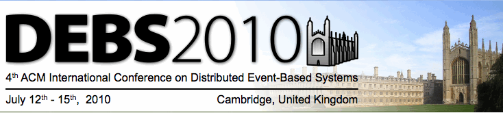

DEBS 2010 is
sponsored by


DEBS 2010 is
in cooperation with:

|  | ||||||||||
AccommodationAccommodation in King's CollegeThe most convenient (and economic) option for conference attendees is to stay in a room in King's College where the conference will take place. We have reserved a number of rooms in King's College that can be booked as part of the conference registration. Accommodation in King's cannot be guaranteed after 11pm BST Friday 2nd July. The rooms available in College are single rooms (standard or with en suite bathrooms) and a limited number of double rooms (en suite). Rates for DEBS participants:
All room rates include breakfast in College. Booking is part of the conference registration process, see the registration page. As documented on the registration pages, King's College can be reached at +44 1223 331 100. More specifically, the Conference Office can be reached at +44 1223 331 410. The address of King's College, Cambridge is: King's College Maps are available below. Other accommodation optionsThere are also several hotels located in close proximity to King's College. More information can found on the Cambridge tourism pages. TravelTravel to CambridgeIf you are wanting to explore Cambridge before your arrival, you may wish to visit http://www.visitcambridge.org/ for information. By air
By bus/coachThe Drummer Street bus station is ten minutes' walk from the College (see map below). For bus routes, see the University's local bus travel page.
By carIf you are driving to Cambridge please note that car parking is limited and expensive. There is no car parking available at King's itself. Cambridge Council provides more information on travel and parking and a list of town car parks. Do allow extra time for parking since the city is always busy. You will find the city's excellent Park and Ride system easier and significantly cheaper. You should also be aware that Cambridge centre is largely pedestrianised. To enforce this there are several rising bollard barricades and these locations are not always reflected in current GPS systems. Further information can be found here. By trainCambridge is on the line from King's Cross and Liverpool Street stations in London. The journey from London to Cambridge takes about an hour and there are frequent trains leaving for Cambridge from both stations. Don't get the slow train that stops at all the stations between London and Cambridge - that one takes about 2 hours and you'd be much better waiting for the next train which will get to Cambridge before it! See the University's list of train timetables. It is very easy to get to Cambridge if you are travelling by Eurostar from Europe. Eurostar will take you directly to St Pancras International Station. King's Cross Station is just next door to St Pancras and you can get direct trains from there to Cambridge. Please bear in mind that Cambridge Railway Station is not in the city centre. If you want to take a taxi to King's there is a taxi rank right outside the station. Alternatively you could take buses 1 or 7, which go from the bus stops to the right of the roundabout as you exit Cambridge station to the bus station in Drummer Street. Note that these buses actually stop in Emmanuel Street or St Andrew's Street rather than going right into the bus station. The College is a 5 minute walk away from the bus station. Alternatively if you want to walk from the train station to King's, the distance is 1.3 miles (1.61 kilometres). MapsMapsThe main University website has a list of official University maps showing King's College. You can also download a map of the College. Within CambridgeKing's College is on King's Parade, in the centre of Cambridge. As well as the map above, Cambridge City Council also has maps of central Cambridge. You may also find it useful to know that Cambridge is one of the cities that you can see on Google Street View.
|